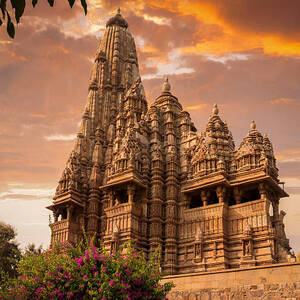

Incredible India
One of the oldest civilisations in the world, India is a mosaic of multicultural experiences. With a rich heritage and myriad attractions, the country is among the most popular tourist destinations in the world. It covers an area of 32, 87,263 sq. km, extending from the snow-covered Himalayan heights to the tropical rain forests of the south. As the 7th largest country in the world, India stands apart from the rest of Asia, marked off as it is by mountains and the sea, which give the country a distinct geographical entity.
Popular In India
Countless Temples
If you were wondering what India is famous for, then I can’t make this list without mentioning its many beautiful temples.The country is home to over 2 million temples which attract people worldwide who come to seek spirituality.Some of the famous holy temples India is famous for that you shouldn’t miss visiting while in the country include; the golden temple, Konark temple, Sanchi stupa, and Meenakshi temple.
Indian Food/ Cuisine

One of Indias’ famous things is its mouth-watering spicy food. The country offers rich and deliciously flavored dishes unique in every taste being the largest producer and consumer of spices in the world.If you are a foodie and happen to travel to India, you will love their full-flavored delicious food.From the famous chicken tikka masala which is actually my favorite Indian dish, Murgh Makhani (butter chicken), Tandoori chicken, Naan to so many other palatable dishes, the Indian cuisine is unmatched and it will leave you licking your fingers if you love spiced food! Actually, even their tea is spiced up!The fun part is that every region/state has its own unique signature recipe so prepare your taste buds to sample the variety of unique dishes.
Their Family Bond
One of the unique things about the Indian culture is that it promotes family bonds. Unlike other societies, Indians live in a joint family structure where you can find three generations living under one roof.Different from other cultures where one gets married and starts a new life with their wife/husband away from the family, in India, the couple lives together with their in-laws.In the Indian culture, family plays an important role in their lives and most of them live in nuclear families.
The Himalayas
The Himalayas are a beautiful mountain range in South Asia that stretches across six countries, including India especially the northeastern portion of the country.The Indian Himalayan Region spans 11 Indian states and union territories and is an important landmark in Asia that attracts adventurous tourists.It might be shared among a number of countries but India has the most share of the Himalayas covering about 460000 km which constitutes 16.2% of the country’s total geographical area.